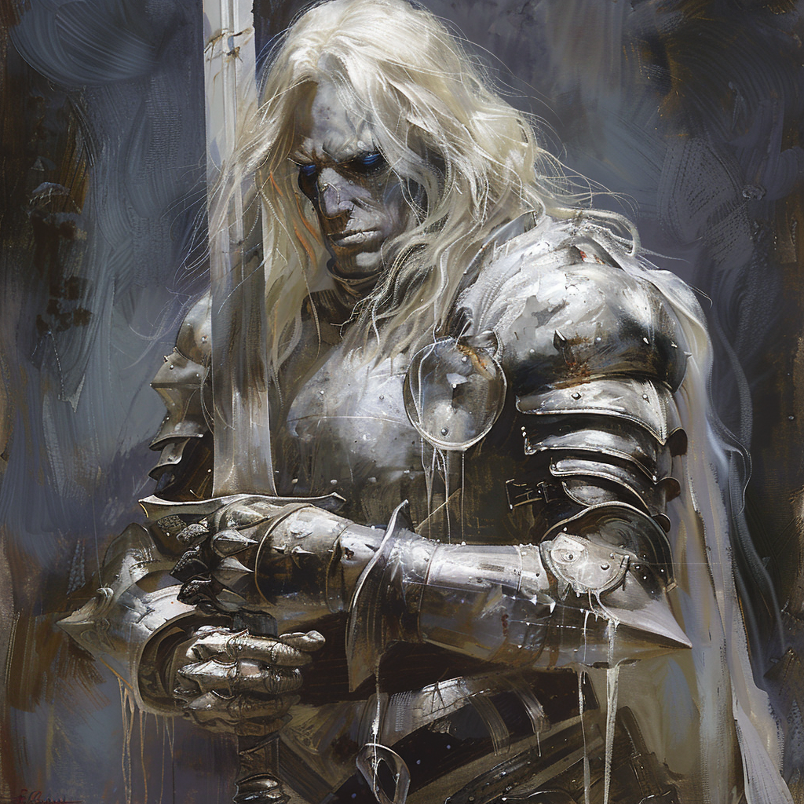

|  |
Sieur Godfrey GwilymSieur Godfrey Gwilym était un chevalier distingué de l'Ordre du Dragon d'Argent, tombé lors de la bataille des collines de Balinok. Même après sa mort, il dirige l'ordre en tant que revenant. Lorsque nous l'avons interrogé sur ses dernières volontés, il nous a confié qu'il aimerait permettre à Vladimir et à ses frères d'armes de trouver la paix, par tous les moyens nécessaires. Godfrey demeure un chef implacable, et même à travers son apparence de mort-vivant son apparence refléte sa noblesse d'âme. |